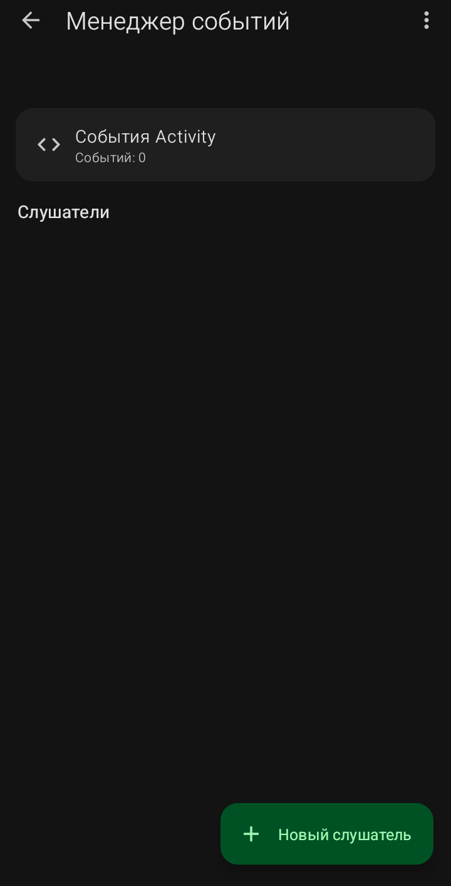
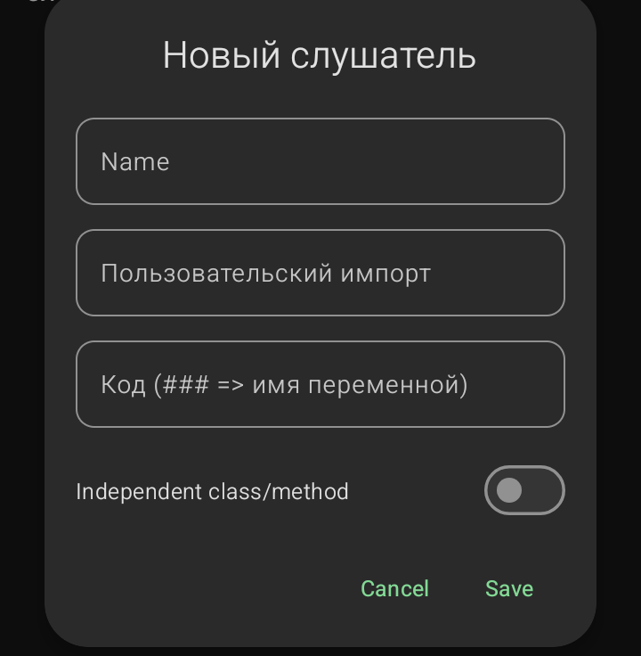

Менеджер событий (Слушатели)

Этот раздел позволяет создавать собственные события (например, реакцию на какие-то системные действия), которых нет в стандартном наборе.
- События Activity: список существующих событий (по умолчанию пуст).
- Слушатели: список созданных вами слушателей.
- Кнопка «+ Новый слушатель»: создает нового слушателя.
Окно «Новый слушатель»

- Name: имя слушателя.
- Пользовательский импорт: Java-импорты.
- Код (### => имя переменной): Java-код, который будет выполняться при срабатывании события. ### заменяется на имя вашего компонента.
- Independent class/method: переключатель. Если включен, код будет независимым классом или методом.
Экран «Детали события»
Показывает список событий для выбранного слушателя.
Окно «Новое событие Activity»
- Имя события: название события.
- Описание: пояснение для пользователя.
- Параметры: аргументы, которые передаются в событие.
- Спецификация: описание параметров.
- Код события: Java-код, который выполняется при наступлении события.
Sketchware Pro 7 · Автор: RasNikGal · © 2026